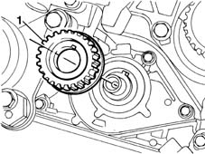
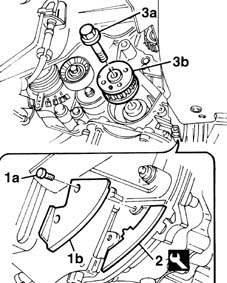

1032B44 toothed drive pulley - r + r with timing belt removed
- Path
- Procedures > 10 ENGINE UNIT > 1032 TIMING SYSTEM > 1032B belt timing system > 1032B44 toothed drive pulley - r + r with timing belt removed
- Kind
- repair procedure (removal / refitting; the operation number is the code)
- Applies to
- all engines; all production periods
- Interactive page
- https://sloeber94.github.io/elrnDB-fMltpl/en/#/2891223
Applies to: engines: 1.6 16v; all production periods
 Removing
Removing
 Refitting
Refitting1. Withdraw the toothed drive pulley from the crankshaft.

Applies to: engines: 1.6 16v; all production periods
Refitting
RemovingFit the toothed pulley to the crankshaft.
Applies to: engines: 1.9 JTD 8V; all production periods
Removing
Refitting1. Undo bolts (1a) and remove flywheel guard (1b).
2. Position the flywheel retainer.
 | Name | Country |
|---|---|---|
2 | Counter-torque | 1.860.898.000 |
3. Undo bolt (3a) and remove toothed drive pulley (3b).

Applies to: engines: 1.9 JTD 8V; all production periods
Refitting
RemovingFit the toothed drive pulley.
Tighten the pulley bolt to torque.
 | Fastening | Component | Ø | Value (daNm) |
|---|---|---|---|---|
- | Left bolt | FLYWHEEL SIDE COVER | M16 | 306 - 378 |
Remove the flywheel retainer and fit the engine flywheel guard.
Topics that link to this page (6)
- 1020D10 front crank shaft oil seal cover - r + r and replace seals with timing belt removed
- 1020D12 front crank shaft oil seal cover - r + r and replace seals
- 1020D18 front crank shaft cover oil seal - replace
- 1020D20 front crankshaft cover oil seal - replace for versions with air conditioner
- 1032B46 toothed drive pulley - r + r
- 1032B47 toothed drive pulley - r r for versions with air conditioner